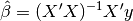
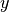
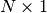
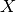
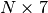

Getting started¶
This very simple case-study is designed to get you up-and-running quickly with
statsmodels. Starting from raw data, we will show the steps needed to
estimate a statistical model and to draw a diagnostic plot. We will only use
functions provided by statsmodels or its pandas and patsy
dependencies.
Loading modules and functions¶
After installing statsmodels and its dependencies, we load a few modules and functions:
In [1]: import statsmodels.api as sm
In [2]: import pandas
In [3]: from patsy import dmatrices
pandas builds on numpy arrays to provide
rich data structures and data analysis tools. The pandas.DataFrame function
provides labelled arrays of (potentially heterogenous) data, similar to the
R “data.frame”. The pandas.read_csv function can be used to convert a
comma-separated values file to a DataFrame object.
patsy is a Python library for describing
statistical models and building Design Matrices using R-like formulas.
Data¶
We download the Guerry dataset, a
collection of historical data used in support of Andre-Michel Guerry’s 1833
Essay on the Moral Statistics of France. The data set is hosted online in
comma-separated values format (CSV) by the Rdatasets repository.
We could download the file locally and then load it using read_csv, but
pandas takes care of all of this automatically for us:
In [4]: df = sm.datasets.get_rdataset("Guerry", "HistData").data
The Input/Output doc page shows how to import from various other formats.
We select the variables of interest and look at the bottom 5 rows:
In [5]: vars = ['Department', 'Lottery', 'Literacy', 'Wealth', 'Region']
In [6]: df = df[vars]
In [7]: df[-5:]
Out[7]:
Department Lottery Literacy Wealth Region
81 Vienne 40 25 68 W
82 Haute-Vienne 55 13 67 C
83 Vosges 14 62 82 E
84 Yonne 51 47 30 C
85 Corse 83 49 37 NaN
Notice that there is one missing observation in the Region column. We
eliminate it using a DataFrame method provided by pandas:
In [8]: df = df.dropna()
In [9]: df[-5:]
Out[9]:
Department Lottery Literacy Wealth Region
80 Vendee 68 28 56 W
81 Vienne 40 25 68 W
82 Haute-Vienne 55 13 67 C
83 Vosges 14 62 82 E
84 Yonne 51 47 30 C
Substantive motivation and model¶
We want to know whether literacy rates in the 86 French departments are associated with per capita wagers on the Royal Lottery in the 1820s. We need to control for the level of wealth in each department, and we also want to include a series of dummy variables on the right-hand side of our regression equation to control for unobserved heterogeneity due to regional effects. The model is estimated using ordinary least squares regression (OLS).
Design matrices (endog & exog)¶
To fit most of the models covered by statsmodels, you will need to create
two design matrices. The first is a matrix of endogenous variable(s) (i.e.
dependent, response, regressand, etc.). The second is a matrix of exogenous
variable(s) (i.e. independent, predictor, regressor, etc.). The OLS coefficient
estimates are calculated as usual:

where  is an  column of data on lottery wagers per capita (Lottery).  is  with an intercept, the Literacy and Wealth variables, and 4 region binary variables.
The patsy module provides a convenient function to prepare design matrices
using R-like formulas. You can find more information here:
http://patsy.readthedocs.org
We use patsy‘s dmatrices function to create design matrices:
In [10]: y, X = dmatrices('Lottery ~ Literacy + Wealth + Region', data=df, return_type='dataframe')
The resulting matrices/data frames look like this:
In [11]: y[:3]
Out[11]:
Lottery
0 41
1 38
2 66
In [12]: X[:3]
������������������������������������������������������Out[12]:
Intercept Region[T.E] Region[T.N] Region[T.S] Region[T.W] Literacy \
0 1 1 0 0 0 37
1 1 0 1 0 0 51
2 1 0 0 0 0 13
Wealth
0 73
1 22
2 61
Notice that dmatrices has
- split the categorical Region variable into a set of indicator variables.
- added a constant to the exogenous regressors matrix.
- returned
pandasDataFrames instead of simple numpy arrays. This is useful because DataFrames allowstatsmodelsto carry-over meta-data (e.g. variable names) when reporting results.
The above behavior can of course be altered. See the patsy doc pages.
Model fit and summary¶
Fitting a model in statsmodels typically involves 3 easy steps:
- Use the model class to describe the model
- Fit the model using a class method
- Inspect the results using a summary method
For OLS, this is achieved by:
In [13]: mod = sm.OLS(y, X) # Describe model
In [14]: res = mod.fit() # Fit model
In [15]: print(res.summary()) # Summarize model
OLS Regression Results
==============================================================================
Dep. Variable: Lottery R-squared: 0.338
Model: OLS Adj. R-squared: 0.287
Method: Least Squares F-statistic: 6.636
Date: Mon, 20 Jul 2015 Prob (F-statistic): 1.07e-05
Time: 17:46:51 Log-Likelihood: -375.30
No. Observations: 85 AIC: 764.6
Df Residuals: 78 BIC: 781.7
Df Model: 6
Covariance Type: nonrobust
===============================================================================
coef std err t P>|t| [95.0% Conf. Int.]
-------------------------------------------------------------------------------
Intercept 38.6517 9.456 4.087 0.000 19.826 57.478
Region[T.E] -15.4278 9.727 -1.586 0.117 -34.793 3.938
Region[T.N] -10.0170 9.260 -1.082 0.283 -28.453 8.419
Region[T.S] -4.5483 7.279 -0.625 0.534 -19.039 9.943
Region[T.W] -10.0913 7.196 -1.402 0.165 -24.418 4.235
Literacy -0.1858 0.210 -0.886 0.378 -0.603 0.232
Wealth 0.4515 0.103 4.390 0.000 0.247 0.656
==============================================================================
Omnibus: 3.049 Durbin-Watson: 1.785
Prob(Omnibus): 0.218 Jarque-Bera (JB): 2.694
Skew: -0.340 Prob(JB): 0.260
Kurtosis: 2.454 Cond. No. 371.
==============================================================================
Warnings:
[1] Standard Errors assume that the covariance matrix of the errors is correctly specified.
The res object has many useful attributes. For example, we can extract
parameter estimates and r-squared by typing:
In [16]: res.params
Out[16]:
Intercept 38.651655
Region[T.E] -15.427785
Region[T.N] -10.016961
Region[T.S] -4.548257
Region[T.W] -10.091276
Literacy -0.185819
Wealth 0.451475
dtype: float64
In [17]: res.rsquared
��������������������������������������������������������������������������������������������������������������������������������������������������������������������������������������������������������Out[17]: 0.3379508691928822
Type dir(res) for a full list of attributes.
For more information and examples, see the Regression doc page
Diagnostics and specification tests¶
statsmodels allows you to conduct a range of useful regression diagnostics
and specification tests. For instance,
apply the Rainbow test for linearity (the null hypothesis is that the
relationship is properly modelled as linear):
In [18]: sm.stats.linear_rainbow(res)
Out[18]: (0.84723399761569096, 0.69979655436216437)
Admittedly, the output produced above is not very verbose, but we know from
reading the docstring
(also, print(sm.stats.linear_rainbow.__doc__)) that the
first number is an F-statistic and that the second is the p-value.
statsmodels also provides graphics functions. For example, we can draw a
plot of partial regression for a set of regressors by:
In [19]: sm.graphics.plot_partregress('Lottery', 'Wealth', ['Region', 'Literacy'],
....: data=df, obs_labels=False)
....:
Out[19]: <matplotlib.figure.Figure at 0x11180fcf8>
More¶
Congratulations! You’re ready to move on to other topics in the Table of Contents